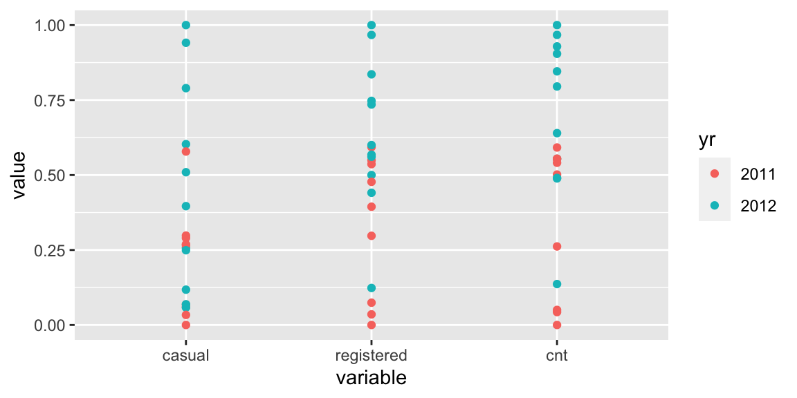
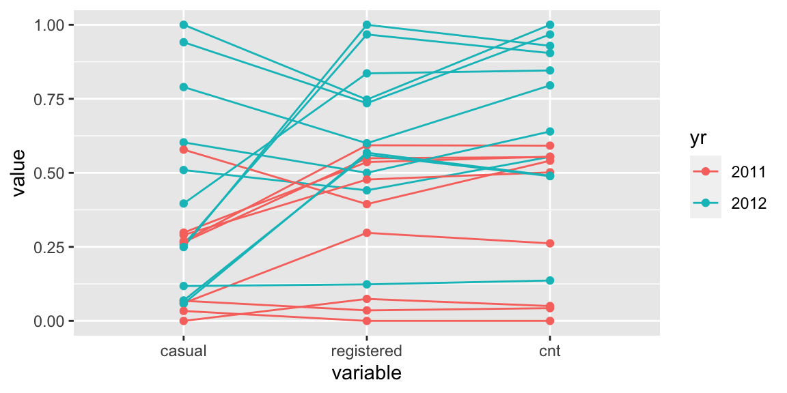
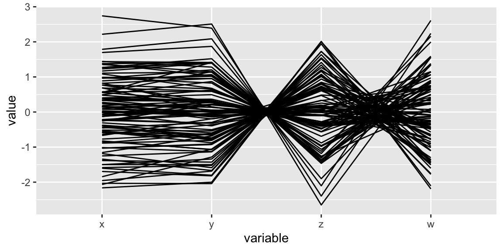
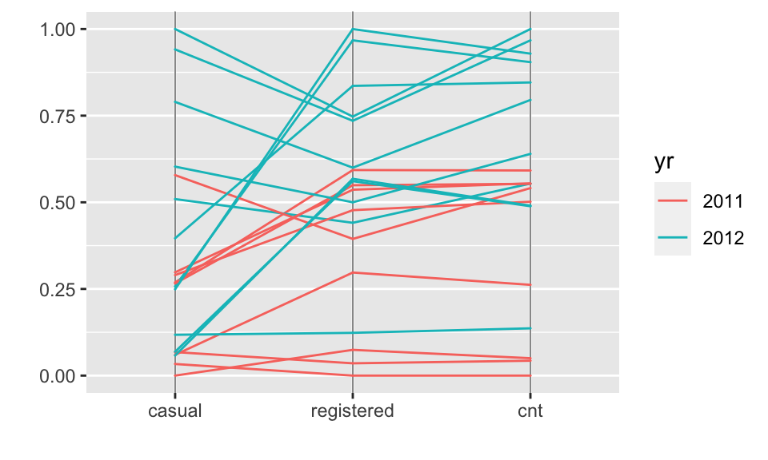
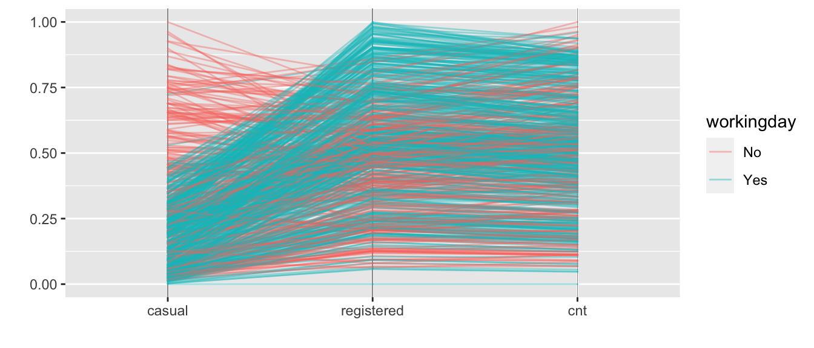

install.packages(c("GGally", "ISLR2", "naniar", "hexbin", "ggpcp"))Data visualisation in R
Part II Advanced displays
Preparation
You will find the material for this lecture on github here https://github.com/cbhurley/CRT2023vis and a copy of this lecture here
First install these packages
and load with
library(GGally)
library(ISLR2)
library(timetk) # for the data
library(palmerpenguins)
library(tidyverse)
library(naniar)
load("bike.Rdata")Big data
ISLR2 has an hourly version of the bike data with 8645 observations.
The plot of registered versus casual users is
ggplot(data=Bikeshare, aes(x=casual, y=registered)) + geom_point()There is likely lot of overplotting. To check this
c(nrow(Bikeshare), nrow(distinct(select(Bikeshare, registered, casual))))[1] 8645 5463Jittering will randomly undo rounding, and using alpha will help too
ggplot(data=Bikeshare, aes(x=casual, y=registered)) +
geom_jitter(alpha=.5, size=.5)So now the overplotting is most severe for registered < 200 and casual < 50.
geom_count will size points in proportion to count, but this is not useful for large \(n\) datasets.
Other options are to form 2d bins, count the number of observations in each, and color in proportion to the frequency.
p <- ggplot(data=Bikeshare, aes(x=registered, y=casual))
p+ geom_bin2d()I prefer to make my colour scale light to dark:
p +
geom_bin2d() +
scale_fill_gradient(low = "wheat", high = "blue")
p +
geom_bin2d() +
scale_fill_gradient(low = "wheat", high = "blue" ,trans="log10")The second plot takes a log of the counts so you get a better spread of colours. This is needed because there is so much skewness in the count distribution.
p +
geom_hex() +
scale_fill_gradient(low = "wheat", high = "blue" ,trans="log10")stat_binhex uses hexagonal binning
A more advanced plot fits a 2d kernel density estimate and draw this as a contour plot.
p + geom_density2d()
p + stat_density2d(aes(fill = after_stat(level)), geom = "polygon") +
scale_fill_gradient(low = "wheat", high = "blue")We no longer need the logged colour scale, because the bivariate density smooths out the count distribution.
The second plot fills in the contours with color.
Every geom_ function has an associated stat_ function that does the necessary calculations.
Conversely, every stat_ function has an associated geom_ function to do the drawing. So instead of geom_density2d you could use stat_density2d and you would get the same plot.
However, if you want to draw the density with a different geom other than the default contour, you need to use stat_density2d and specify the new geom, here polygon".
For this data, the density plot smears out the two “wings” of the plot, so either the geom_bin or geom_hex with the logged colour scale is better.
Scatterplot matrix
Back to the smaller dataset.
Go to articles tab for info https://ggobi.github.io/ggally/
library(GGally)
ggpairs(bike, columns=c("casual","registered","cnt" ))You can change what is plotted on lower, upper and diagonal,using lower= etc. Putting in mapping= gives densities for both years separately
ggpairs(
bike,
mapping = aes(color = yr),
columns = c("casual", "registered", "cnt"),
lower = list(continuous = wrap(
"smooth",
method = "lm",
se = F,
alpha = .5
)),
diag = list(continuous = wrap("densityDiag", alpha = 0.5))
)ggpairs can handle factors as well. In this plot yrs is in as a plot variable, and as colour.
ggpairs(
bike,
mapping = aes(color = yr),
columns = c("casual", "registered", "cnt", "yr"),
lower = list(continuous = wrap(
"smooth",
method = "lm",
se = F,
alpha = .5
)),
diag = list(continuous = wrap("densityDiag", alpha = 0.5))
)Parallel coordinates
These can be constructed with function ggparcoord from GGally.
But, a newer package called ggpcp is better, as it handles factors as well.
Construction: with a sample of 20 bike observations


To see what certain patterns look like in a parallel coordinate plot, let us look at some fake data
x <- rnorm(100)
y <- x+ .3*rnorm(100)
z <- -y+ .1*rnorm(100)
w <- -z+ .5*rnorm(100)ggparcoord(data.frame(x,y,z,w))
Positive correlation exhibits as parallel segments.
Negative correlation has crossing. The stronger the negative correlation the smaller the pinch point.
This is how you create the parallel coordinate plot in ggpcp
library(ggpcp)
bike[s,] |>
pcp_select(casual:cnt) |>
pcp_scale(method="uniminmax") |>
ggplot(aes_pcp()) +
geom_pcp_axes() +
geom_pcp(aes(color=yr)) +
xlab("")+ ylab("")
Here, all variables are scaled to the unit interval individually. Variables that are positively correlated will have parallel line segments, here registered and cnt.
Other scaling options are available eg
bike[s,] |>
pcp_select(casual:cnt) |>
pcp_scale(method="raw") |>
ggplot(aes_pcp()) +
geom_pcp_axes() +
geom_pcp(aes(color=yr)) +
xlab("")+ ylab("")In raw, no scaling is done. Here you can see that most users per day are registered.
bike |>
pcp_select(casual:cnt) |>
pcp_scale(method="uniminmax") |>
ggplot(aes_pcp()) +
geom_pcp_axes() +
geom_pcp(aes(color=workingday), alpha=.4) +
xlab("")+ ylab("")
In the above we see that there is a difference in the casual-registered association for workingday or not. Both groups have positive association but slopes are different. There are more casual users at the weekend.
Verifying with a scatterplot
ggplot(data=bike, aes(x=casual, y=registered, color=workingday)) + geom_point()The same pattern was evident in the full bike data.
Standard parallel coordinate plots require numeric variables. There are variants that have been defined for categorical variables.
With ggpcp factor variables can be used as an axis variable:
bike |>
pcp_select(workingday, casual:cnt) |>
pcp_scale(method="uniminmax") |>
pcp_arrange() |> # spaces out factor variables
ggplot(aes_pcp()) +
geom_pcp_boxes(boxwidth = 0.1, fill="grey70") +
geom_pcp_axes() +
geom_pcp(aes(color=workingday), alpha=.4) +
geom_pcp_labels() +
xlab("")+ ylab("")Practice 3
Using the penguins dataset, make a plot of the four dimension variables, colored by species.
Solution
ggpairs(na.omit(penguins), mapping = aes(color = species),
columns=c(3:6),
lower = list(continuous = wrap("smooth", method="lm", se=F, alpha=.5)),
diag = list(continuous = wrap("densityDiag", alpha=0.5 )))Which pair of variables and species has the highest correlation?
Can you find two variables with negative correlation, but positive correlation within each species? This is called Simpson’s paradox.
Then make a parallel coordinate plot of the same four variables, with the same colouring scheme.
Can you identify presence of positive and negative correlation?
In this plot, how does the Gentoo species compare to the other two species?
Finally, make a parallel coordinate plot of species, island, and body_mass_g, coloured by species. How many species are on each island?
Missing data
Here we use package naniar.
library(palmerpenguins)
gg_miss_case(penguins)gg_miss_var(penguins)There are also facet options.
gg_miss_case(penguins, facet=species)
gg_miss_var(penguins, facet=species)Adelie and Gentoo have a few cases with missing values, Chinstrap cases are all complete.
The variables plot tells us that sex has the most missing values. There are just a few missings in the measurement variables.
The visualisation vis_miss is a heatmap identifying which values are missing in the dataset.
vis_miss(penguins)For the penguins, this tells us that there is one penguin each of the two Species that is missing on the numeric variables.
These numeric values are not missing at random. It could simply be there are two penguins that they were not able to measure.
An alternative visualisation for exploring combinations of variables that are missing is the upset plot
gg_miss_upset(penguins)- This one tells us directly the numbers of missings on each of the variables.
- There are 9 cases with missing sex only
- There are two cases missing on the five listed variables.
Check out the visualisations in naniar for more options, eg the vignette at https://cran.r-project.org/web/packages/naniar/vignettes/naniar-visualisation.html
Correlation plots
These show a graphical representation of a correlation matrix.
library(corrplot)
bcor <- cor(bike[,sapply(bike,is.numeric)], use= "complete.obs")
corrplot(bcor)
corrplot(bcor, diag=F, order="hclust", hclust.method="average")The second variant
removes the uninformative diagonal entries
orders the variables using clustering, which places high correlation pairs nearby
A new (as yet not on CRAN package from CRT student Amit Chinwan) produces association measures and plots for numerical, factors, and ordinal factors (and a lot more besides).
Here we use corVis::calc_assoc, which calculates canonical correlation (non-negative) for pairs of factors, or factor-numerical pairs.
library(corVis)
bcor <- calc_assoc(bike[,-1]) # does not handle dates
plot_assoc_matrix(bcor)The time variables are associated with each other (yday, month, season), and these are also associated with the weather variables.
titanic case study
There were 2201 people aboard the titanic when it sank in 1912. A summary of the people on board and whether they survived or not is given in the titanicanic dataset.
Here are some images as it left its last port of call, Cobh.
Can we figure out from this data which category of passenger had the highest chance of survival?
This case study looks at 4 categorical variables simultaneously: - Survival (yes or no), - class (first, second, third, crew,) - gender (male or female) and - age (child or adult).
First we look at the number of survivors by class
#titanicanic # a 4d array....
titanic <- as.data.frame(Titanic)
head(titanic)# A tibble: 6 × 5
Class Sex Age Survived Freq
<fct> <fct> <fct> <fct> <dbl>
1 1st Male Child No 0
2 2nd Male Child No 0
3 3rd Male Child No 35
4 Crew Male Child No 0
5 1st Female Child No 0
6 2nd Female Child No 0titanic<- titanic[c(17:32,1:16),]
ggplot(data = titanic, aes(x = Class, y = Freq,fill=Survived)) +
geom_col() and then the survival rates by class
ggplot(data = titanic, aes(x = Class, y = Freq,fill=Survived)) +
geom_col(position="fill") - There is a big difference in Survival rates across the classes.
- First class passengers have the highest chance of survival, crew members the lowest.
We can bring in gender with facet_wrap
ggplot(data = titanic, aes(x = Class, y = Freq,fill=Survived)) +
geom_col(position="fill") +
facet_wrap( ~ Sex) + ylab("Rate")Third class females do worse than crew females (46% versus 87%), and third class males do worse than crew males (17% versus 22%), although when gender is ignored the situation is reversed.
This apparent paradox (Simpson’s paradox) occurs because the vast majority of crew members are male.
The overall 3rd class survival rate of 25% is an average of 46% and 17%, but as there are 2.6 times more men than women in 3rd class 17% gets more weight.
The overall crew survival rate of 24% is an average of 87% and 22%, but as there are 37 times more men than women in crew class 87% gets very little weight.
Finally, bringing in age
ggplot(data = titanic, aes(x = Class, y = Freq,fill=Survived)) +
geom_col(position="fill") +
facet_wrap( ~ Age+ Sex) + ylab("Rate")We can get some simplification by showing the survival rate, that is omit the red sections.
titanicR <-
titanic |> group_by(Class, Sex,Age) |>
summarise(died=Freq[2], survived=Freq[1], rate=survived/sum(Freq))
titanicR# A tibble: 16 × 6
Class Sex Age died survived rate
<fct> <fct> <fct> <dbl> <dbl> <dbl>
1 1st Male Child 0 5 1
2 1st Male Adult 118 57 0.326
3 1st Female Child 0 1 1
4 1st Female Adult 4 140 0.972
5 2nd Male Child 0 11 1
6 2nd Male Adult 154 14 0.0833
7 2nd Female Child 0 13 1
8 2nd Female Adult 13 80 0.860
9 3rd Male Child 35 13 0.271
10 3rd Male Adult 387 75 0.162
11 3rd Female Child 17 14 0.452
12 3rd Female Adult 89 76 0.461
13 Crew Male Child 0 0 NaN
14 Crew Male Adult 670 192 0.223
15 Crew Female Child 0 0 NaN
16 Crew Female Adult 3 20 0.870 ggplot(data = titanicR, aes(x = Class, y = rate)) +
geom_col(fill="lightblue") +
facet_wrap( ~ Age+ Sex) One of the examples in the ggpcp vignette has a parallel coordinates version of this data: https://heike.github.io/ggpcp/
Practice 4
Explore the survival rates for the data lusitania.csv on https://github.com/cbhurley/CRT2023vis This is a tabulated version of the data, in the same format as titanic. The complete dataset is available on Kaggle.
You can find out more about the shipwreck https://en.wikipedia.org/wiki/RMS_Lusitania
References
ggplot2: Elegant Graphics for Data Analysis https://ggplot2-book.org Hadley Wickham
Data visualization a practical introduction by Kieran Healy https://socviz.co
Fundamentals of Data Visualization by Claus Wilke https://clauswilke.com/dataviz/ (no R)
Best Practices for Data Visualisation from Royal Statistical Society https://royal-statistical-society.github.io/datavisguide/docs/principles.html